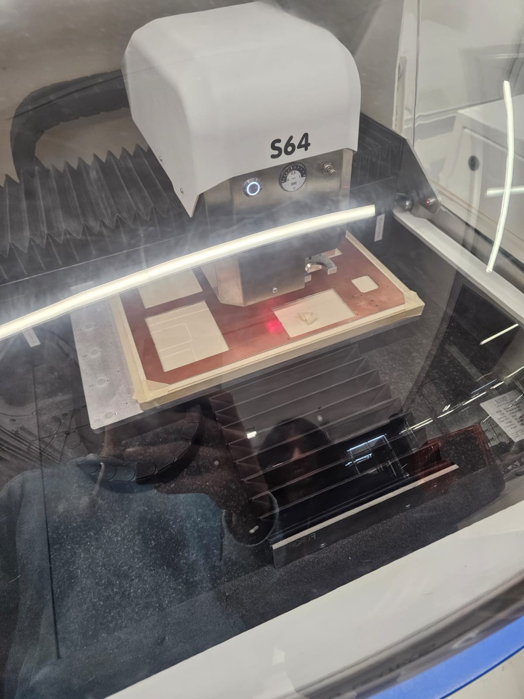
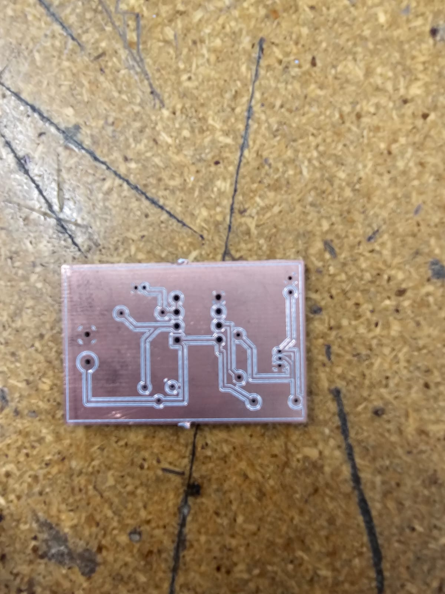

Descripción del Proyecto
En este proyecto aprendimos a diseñar y fabricar un circuito impreso (PCB), que permite conectar de forma ordenada y compacta los componentes electrónicos de un circuito. Este tipo de diseño es fundamental en cualquier dispositivo electrónico moderno.
El proceso inició con la lectura y análisis del diagrama electrónico<, donde identificamos los componentes, sus conexiones y la forma correcta de integrarlos. Utilizamos la plataforma Tinkercad< para realizar las simulaciones necesarias y verificar el correcto funcionamiento del circuito.

Una vez validado el diseño, se realizó el trazado de las pistas en el software de diseño PCB. Posteriormente, el circuito fue transferido a una placa de cobre mediante el proceso de serigrafía, permitiendo que las conexiones quedaran grabadas con precisión.


Este proceso nos permitió comprender la importancia del orden y la planeación al diseñar sistemas eléctricos reales. También aprendimos sobre los materiales, herramientas y precauciones necesarias para fabricar circuitos seguros y funcionales.
Gracias a esta práctica, fortalecimos nuestras habilidades en diseño electrónico, simulación y manufactura, aplicando el pensamiento de ingeniería desde la concepción hasta la implementación del circuito físico.
 